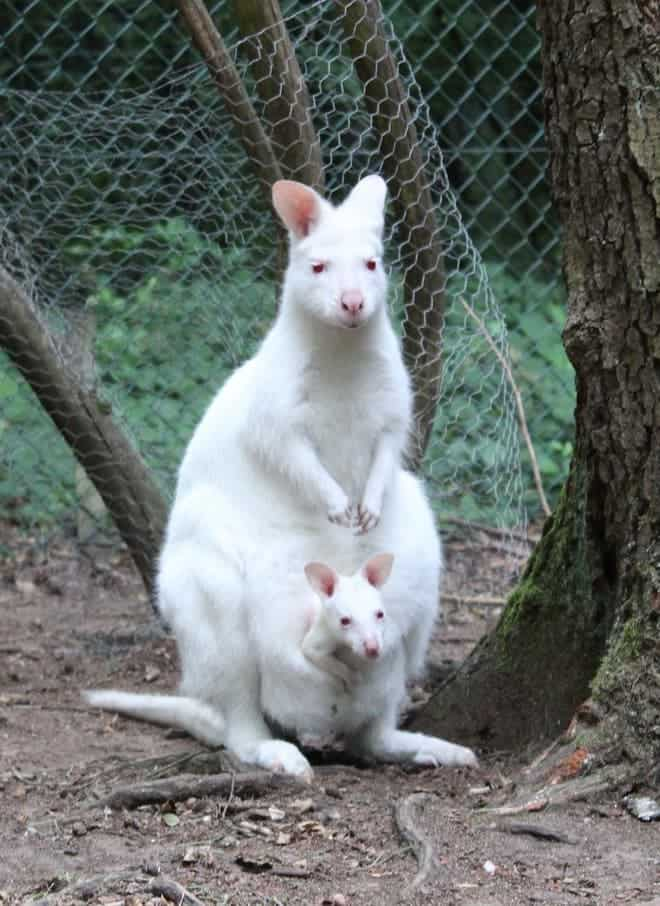

Albino kanguru, genetik bir mutasyon sonucu melanin pigmentinin eksikliği nedeniyle beyaz tüylere ve pembe gözlere sahip olan nadir bir kanguru türüdür; genellikle Avustralya’da görülür ve kahverengi kanguru (Macropus fuliginosus) ya da gri kanguru gibi yaygın türlerin albino bireyleri şeklinde ortaya çıkar. Bu özel kangurular, diğer kangurular gibi güçlü arka bacaklarıyla uzun sıçramalar yapabilir, otçul beslenerek çimen ve yapraklarla yaşamlarını sürdürür, ancak albino oldukları için güneş ışığına karşı daha hassastırlar ve doğal ortamda kamuflaj eksikliği nedeniyle yırtıcılara karşı daha savunmasızdırlar. Ortalama 20 yıl yaşayabilen albino kangurular, Avustralya’nın ekosisteminde diğer kangurularla aynı rolü üstlenir; nadir görülmeleri ve dikkat çekici görünümleri nedeniyle hem bilimsel araştırmalarda hem de kültürel sembolizmde özel bir yere sahiptirler, ancak habitat kaybı ve insan faaliyetleri onların da yaşamını tehdit edebilmektedir.